/* james-coupe — proofs */
11 plates. Deterministic overlays rendered by the composition-analysis skill.
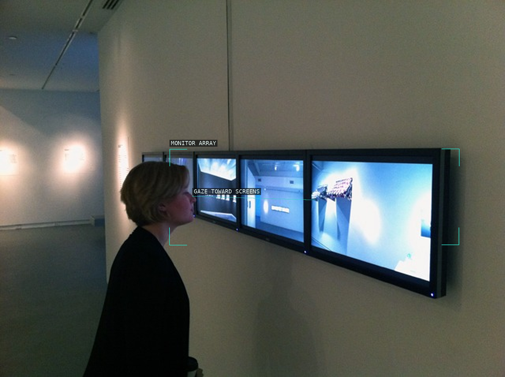
01-panoptic-panorama-1
Viewer and monitor array.
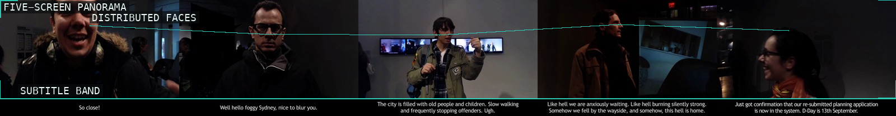
02-panoptic-panorama-2
Five-screen facial sequence.
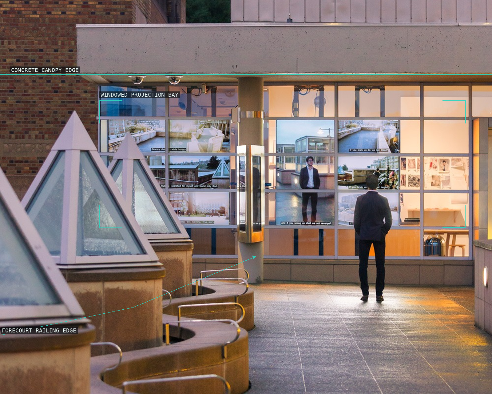
03-sanctum
Forecourt and facade monitor bay.
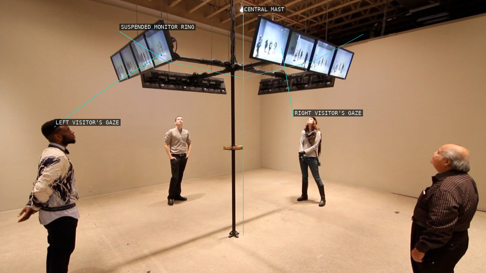
04-swarm
Suspended monitor ring.
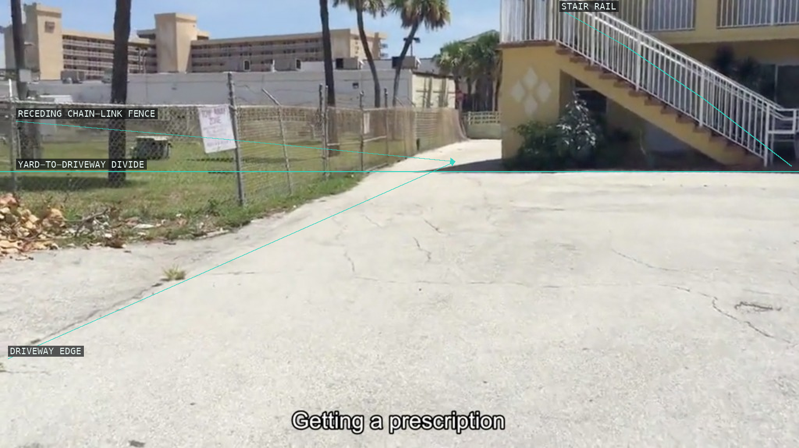
05-general-intellect
Fenced exterior passage.
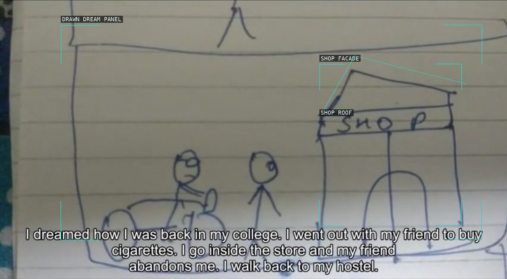
06-watchtower
Drawn dream panel.
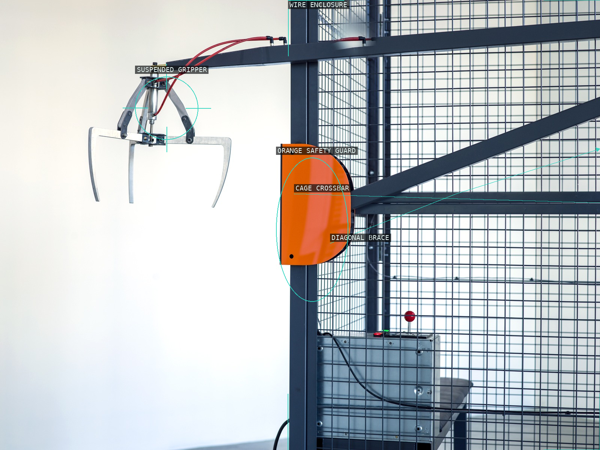
07-i-am-not-a-robot
Gripper and wire enclosure.
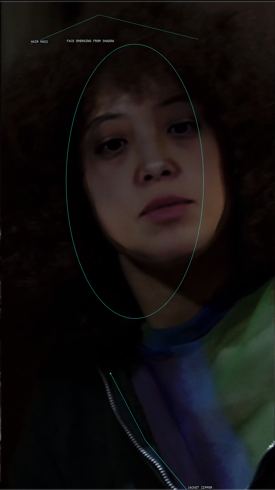
08-warriors-generative-adversarial-network
Close deepfake portrait.
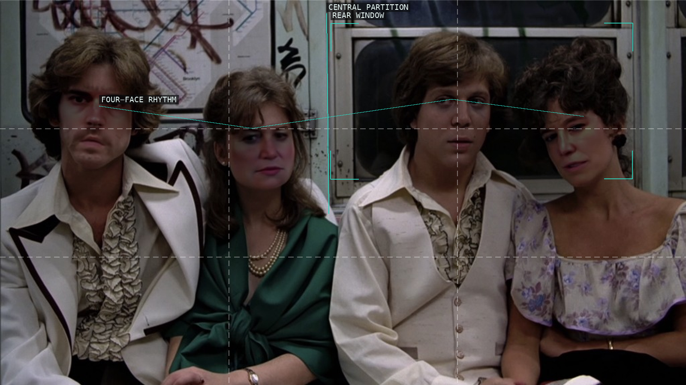
09-warriors-war
Four-face carriage rhythm.
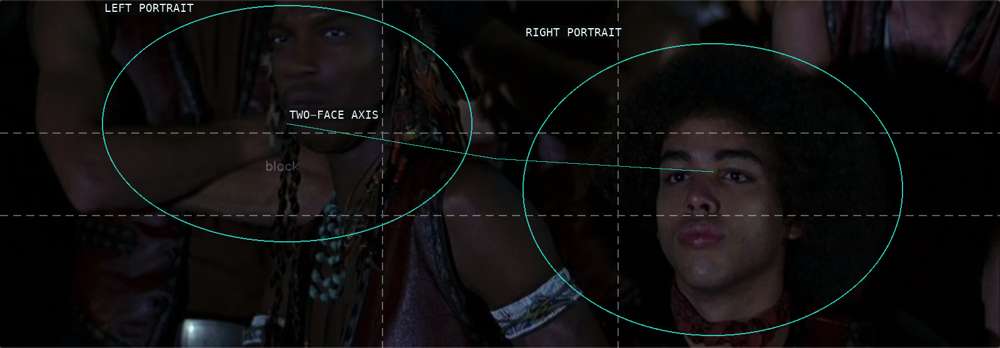
10-warriors-sixty-thousand-soldiers
Two-face crowd field.
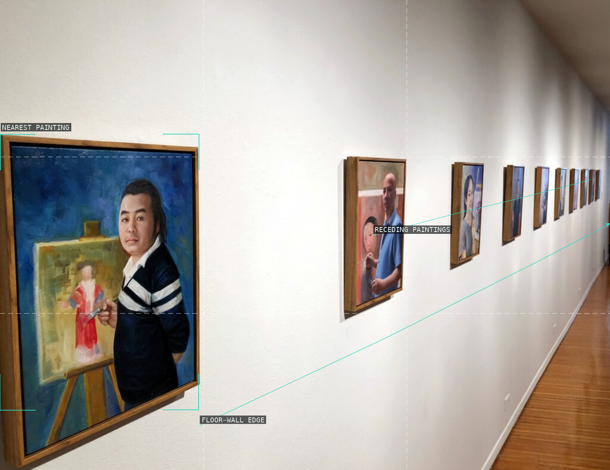
11-the-chinese-rooms
Receding painting sequence.